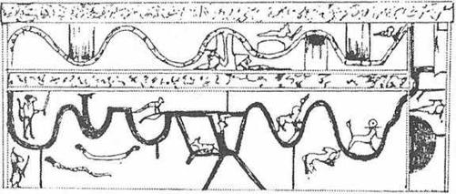
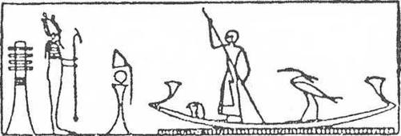
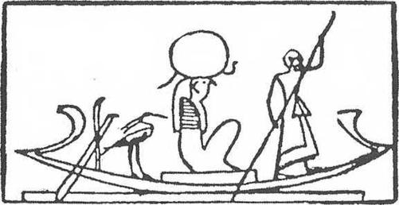
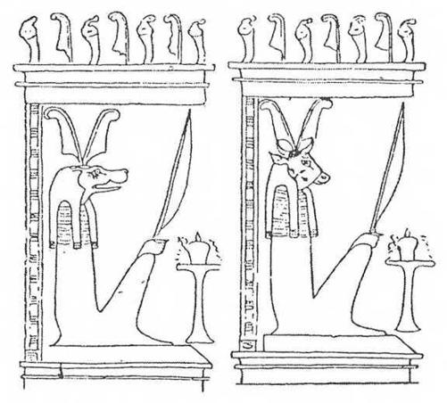

VI. BAB
İnisiyeler, İnsanın Altı Alemden Oluştuğunu Biliyorlardı;
Üçü Fiziksel (Beden, İsim ve Gölge) ve Üçü Fizikötesiydi (Ankh, Ba ve Ka)
Mısırlılar, iki hafta boyunca ay küçülürken, Kötülük Ruhu bir domuz şeklinde gökyüzündeki Horusun Gözünü yediğine inanıyorlardı. Bir balıkçının koca karınlı, sedef renkli bir ay balığını yakalayışı gibi, Seth de bu gözü ağlarında yakalıyor, bu ölüler dünyasına egemen esrarlı gözü su aygırlarına, Nil Nehrinin derinliklerinden gelmiş ışık yansımaları gibi, sular boyunca sinsice kayan timsahlara atıyordu.
Bunun içindir ki Mısırlılar, Osiris’in ruhunun, diğer ölülerinki gibi, Horusun Gözünde kaybolduktan sonra, mumyalanmış olan ve terk ettiği bedene mumyalama süresince Horus’un ruhunun başına gelenler gibi her çeşit maceraya dahil olduktan sonra dönebileceğine inanıyorlardı. Bunun içindir ki mumya, mezarın veya tapınağın zemininde dikine koyulduğu zaman, rahipler, yani Horus, karısı İsis, kardeşi Nephtis, aynı zamanda Thot ve Anubis, ruhun saklandığı Horus’un Gözünü aramaya koyuluyorlardı. Buradaki eski sırların anahtarlarını, bu sembollerin anlamlarını bilemiyoruz. Ne büyülü bir ale-
me kaçan bu ruhların dış görünüşlerinin ne olduğunu, ne de onları hangi karanlık veya aydınlık kuvvetlerin, sonu gelmez savrulmalar içindeki planetler gibi uzaya dağılmış onbinlerce iyilik veya kötülük taşıyıcısı haline getirmesini anlayabileceğiz.
Bu “Horus’un Gözünün aranışı,” bu ışığın aranışı, ayini yöneten rahibin, karaciğeri ve iç organları Seth’in kötülük ruhunun olan bir öküz veya ceylanı boynuzlarından yakaladığı zaman sona eriyordu. İşte ölünün mumyası önünde boynuzlu bir hayvanın kurban edilişini bize anlatan alışılmış sahne budur. Hayvan boğazlandığı veya karnı yarıldığı zaman, rahip sıcak karnını karıştırıyor, parlak ve kaygan iç organlarını Horus’un sindirilmemiş tanrısal gözünü bulmak için muayene ediyordu. Çünkü ölünün ruhu bu gözde saklanmıştı ve ruhu, kurban edilmiş hayvanın iç organlarından çıkararak cenaze rahibi onu ölüye, daha doğrusu mumyasına iade ediyordu. Ruhuyla birlikte ona gölgesini, şeklini ve ismini, adalet tanrılarının mahkemesine çıkmak için gereken bütün görünüşleri iade ediyordu. Ruhu bedenine “saymak”, “Seth’in gözünü koparmak” denen şey buydu; çünkü Büyücü İsis, ilk kez tanrısal ve cenazeyle ilgili kültün motiflerine uygun olarak, bıkmadan usanmadan Horus’un Gözünü aramış, bulmadan hiç dinlenmemişti. Gözün, yani orada oturan ruhun kadavraya iadesi gösterişli ayinlerle yapılıyordu: Mumyaya bir kalp getiriliyor; heykeli ve gölgesi ona götürülüyor ve ölünün oğlu, ona hayatını aktarmak için mumyayı veya heykeli iki eliyle kucaklayarak öpüyordu.
Zamanın başlangıcından beri Mısırlılar, Nil kıyısında hayatın çok kısa ve özellikle değersiz olduğuna inanıyorlardı. Kuşkusuz, çok akıllı meraklılar olarak “sonsuz evlerinde” bulacakları avantaj, zevkler ve konfora değer veriyorlardı. Ancak tek gerçek yaşamın sonsuz yaşam olduğunu da biliyorlardı. Bu yaşam onlar için, aşağıdaki dünyada ikinci kez doğuşları ile başlayacaktı. Çünkü, kokulu mumyalarından, annelerinin karnından doğmuş oldukları gibi, ölüler evreninin oniki kapısı arkasında o esrarlı, şekillerin iadesi süresi tamamlanınca, yeniden doğacaklardı. Ruhsal bedenleriyle birlikte, görünüşten ibaret boş temsillere, değişimlere karşın, ancak ölünün tanıyabileceği öbür benlikleri ile vaktiyle doğmuş oldukları gibi, temize çıkmış bir ruhla doğacaklardı. Bu ka, şekilleriyle birlikte onlara, dünyanın yumurtasını biçimlendiren Büyük Khnoum Kapıcısı tarafından verilmişti.
İnisiyeler, insanın altı elementten oluştuğunu biliyorlardı. Bunların üçü fizikseldi: Beden, gölge ve isim. Diğer üçü fizikötesiydi: Ankh, ka ve ba. Bu “ba” sonsuza dek süren, ölümsüz bir elementti. Yaşayanların dünyada gölgeleri nasıl kendilerine yapışıksa, ka da Douat’ın yalnızlık ve derinliklerinde böyle idi. Genellikle denilebilir ki her insan, doğan güneşin ışığını görür görmez, “Ka’sı ile yürür”. Kuşkusuz kimse bu öbür benliğini ne görmüş ne de ona dokunabilmiştir. Bu, ciğerlerini dolduran hava, bakışını aydınlatan ve sözünü canlandıran düşünce gibidir.
Herkesin ruhunun ve bedeninin kopyası olan ka, şu veya bu şekilde dayanağı olduğu hayat kadar kıymetli idi. Güneşi ve dikilmiş “phallus”u alkışlayan ilk köpek başlı maymunlar tarafından dünyanın tanındığı ve tapınıldığından beri, tahrip edilemez olanın gücüne sahipti. Bu sonsuza dek değişmeyen, ölüye sonraki hayatındaki devamlılığı sağlayan, görünmeyen varlığın değişimlerini birbirine ekleyen ve ona bir kardeş gibi benzeyen ka’yı, her yerde mezarlarda küçük heykelcikler şeklinde buluyoruz. Canlılar ona yalvarmaktan geri kalmazlar, çünkü o çok kuvvetlidir: Ölüye “Ka'n yaşasın, derler; Teb’i severek ve yüzün kuzeyin esintilerine dönük, milyonlarca yıl yaşa.”

(İki Yolun Kitabına Göre, Roarke-Setaou’nun Haritası)
Burada öbür dünyanın bölgelerinden birini görmekteyiz. Roarke-Setaouda yılankavi iki yol vardır. Aşağıdaki ateşten, yukarıdaki sudandır ve birbirlerinden Ateş Gölü ile ayrılırlar. Kapılar, canavarlar, kötü ruhlar, ruhun Roarke-Setaoudaki ilerleyişi sırasında aşması gereken engellerdir. Ruh aşağı dünyanın bu bölgesine eli bıçaklı bir tanrının bekçilik ettiği Ateş Kapısından (sağdaki siyah yarım daire) girer. “Gizli Şeylerin Yolu” olan “yolunu Roarke-Setaou’da açmalıdır. Ancak, kendini Roarke-Setaouda bekleyen zorlukları aştıktan sonra ruh yukarı çıkabilir. Pırıl pırıl, saflaşmış bir halde sonsuzlukta doğar; “Büyük olacak, Işığını kendi yapacaktır"; Gizli Şeylerin ne olduğunu bilecek, ancak isimlerini hiç tekrarlamayacaktır. Nihayet, Anrutef bölgesine, mutluların bölgesine girebilecektir.
Henri Frankfort’un özellikle dikkati çektiği gibi, her ne kadar “bütün tercümeler, fikirlerimizin geçerli olmadığı bir alanda, kendi görüş açımızın etkilerini taşırsa da” şu açıklamayı doğru sayabiliriz: Eski Mısırlıların “kası ister canlı, ister ölü olsunlar, onların gezegenimizin bir bölümünü oluşturduğu kozmosun durmayan hareketi ile bütünleşmelerini sağlıyordu; bize ait olamayan bu (ben), bu ka, bu dünyadaki ve öbür dünyadaki her doğumda verilir ve zamanların başında onu tarif edilemez zamanlar için meydana getirince, geldiği evrene iade edilmek için geri alınır. Ka, Eski Ahit’teki (Tevrat) nephesh, esprihayat, insanın yücelttiği koruyucu ve transandantal görünümü, yani melektir; çünkü insanın kalbi ka ile sevinç içindedir”...
Bennou Kuşunun Osiris’in Ruhunu Taşıdığı Gibi, Ölünün Kuşruhu da Onun Ruhunu Taşır
Ruhlarına gelince, Mısırlılar onu, ölüyle ayni yüzü taşıyan bir kuş şekli altında gösteriyorlardı. Ölüm anında bu uçucu ruh, geçici olarak kasından ve yaşamından ayrılmış bedeni terk ediyor, mastabaların kuyularından kaçarak alışık olduğu yerlerde dolaşıp duruyordu. Onu Nil kıyısındaki bahçelerde, firavun incirlerinin dallarında görmek mümkündü. İlkel arzularını hatırlıyordu; fakat her zaman düşünüp, değerlendirip, karar verebiliyordu. Zihni açık, hareketli ve gelişigüzel, ritüel saflaşmadan sonra kendisinin olacak bu tuhaf dünyada dolaşıyordu. Fakat cennet mutluluklarına aday olan bu ruhu beslemek, adaklarla doyurmak gerekiyordu. Çünkü öbür dünyadaki yaşamı, canlıların ona sağlayacakları maddi ilgiye ve onların şefkatine bağlıydı.
“Ölülerin ruhlarına karşı görevlerini o kadar çabuk unutan canlılara yazıklar olsun! Muskaların kalitesinde veya ölülere verilmesi gereken yiyeceklerde hasislik edenlere yazıklar olsun! Evet, Batı Dağında kaybolmuş olan ölüleri artık hatırlamak istemeyenlere, kapılarının önüne atılmış büyülü çakıllar gibi, üç defa lanet olsun; çünkü ölülerin aç kalmış ruhu kendi evine dönebilir, onları beslemekle yükümlü olanları, nesiller boyunca korkudan bas bas bağırtabilir! Evet, unutulmuş ölülerin çakal tanrı olduğunu görenlere, gecenin sessizliğinde şikayetini haykıran, Nil’in öbür kıyısından gelmiş büyük kuşu, Osiris’in ruhunu taşıyan bennou’yu, kadavraların üzerinde süzülen, mumyasına kavuşmak için mezarının kuyusu üzerinde uçan bataklıkların kuşunu, ölülerin insan başlı, insan elli güzel kuşunu görenlere ne yazık...”
Ölüler Dünyasının Coğrafyası
Mısırlılar, ölüler dünyasının, içinde yaşadıkları dünyaya, yani Mısır’a benzediğine inanıyorlardı. Otuz kilometrelik tarım yapılabilir bir şeridin ortasında akan uzun bir nehirle bu alt dünya, Douat dünyası, firavun Mısır’ı gibi oniki bölgeyi içine alıyordu. “İkili Zambak ve Papirüs Krallığı” da oniki nom veya eyalete ayrılmıştı. Douat’ın oniki bölgesinin her biri gecenin oniki saatine tekabül ediyordu. Birbirlerinden, kuyrukları üzerine dikilmiş, ağızlarından ateş saçan, zikzaklı geçitlerde saklanmış yılanların, şüpheli ölülerin kendilerini atlatmaması için dikkatle nöbet bekledikleri yüksek kapılarla ayrılmışlardı. Bunun içindir ki Ölüler Kitabına, Kapılar Kitabı da denir.
Aşağı dünyanın bu oniki bölgesi, sayısız tanrı, ruh ve sıradan ölülerden oluşan bir halkı barındırıyordu. “Sonsuz hayatlarını Osiris veya Ptaah nezdinde geçirenler hiç bir pozitif işkenceye uğramıyorlar, ancak karanlıklarda bir çeşit uyuşukluk içinde sararıp soluyorlardı. O halden onları kurtaracak, kayığın yaklaşmasıydı. (Güneş Kayığı Douat’ın oniki bölgesinde gece yolculuğunu yapıyordu.) Kayık onların bölgesine girince alkışlıyor, kayık onları aydınlattıkça canlanıyorlar ve vakit geçince, aydınlık da kayığın kayboluşu ile sönüyor ve onlar inlemeye başlıyorlardı.” (A. Moret, Egypte Pharaonique: Firavunların Mısır’ı; Maspero, Hypogees Royaux: Kral, Mezarları.) Bütün ruhlar talihsiz değildi; büyülü formülleri bildikleri için Güneş Kayığına kabul edilenler, Ra’ya gece seferinde eşlik edebiliyorlardı ve Ra günün ilk saatlerinde canlanınca onunla birlikte parlayabiliyor, birlikte Mısır’ın sonsuz mavi göklerinde yükselebiliyor, onun yüzü ve ısınması olabiliyor, Güneş’in sonsuz düşmanı Vadi Engereği Apophis ile savaşırken ona yardım ediyor ve her akşam yeniden yeşil yüzlü ölülerin yeraltı dünyasındaki ağır geçişinde ona katılıyorlardı. Douat’ın derinliklerinde, tanrısal kayığı, Ra’nın önünden ışık düşmanlarını kovmakla görevli tanrının simgesi canlı bir boğa yılanı olan iple yedekliyorlardı.
Douat’ın Kitabı’nın Oniki Saati
Bize ölüyü göğün yıldızlarına açgözlülükle atılmakta olarak gösteren Ölüler Kitabının bu bölümleri bir hayli tuhaftır! Bütün bu ölüler, beşer yüz senelik adımlarla evrene girebilmekten, her boyutta gezip dolaşmaktan çok mutluydular. Gerçekten Teb soylusu, yaşamındaki Teb’li ve soylu, aniden kutsal yazılan öğrenebiliyor, sonsuzlukta raslantı sonucu yakaladıklarının iç organlarının pişiricisi oluyor muydu? Çünkü Piramit Metinlerinde “Ölüler gecenin kazanlarında karınlarını doldururlar,” diye yazılıdır.
Ölü aniden, aldırmaz tanrıların önünde “Kuzey Gökleri’nin Büyükleri’ne eşit mi oluyordu? Maddenin maddeye sahip olduğu gibi, bundan böyle, yukarıdaki ve aşağıdaki tanrıların zekasına sahip olan, yaratıcı ışıkta, çoğalmak için şekil alan her şeyin derinliklerinde canlıların düşüncesinde ve gözünde Mısır’ın üstünde parlayan yıldızlar gibi ölümsüz mü oluyordu? Cennette, şu göğsü şişkin akbabada semavi anasını tanıyabilecek, yanında, dünyadakinin tersine, yeniden ve sonsuza dek, hiç sütten kesilmeyen bir çocuk olabilecek iniydi? Ölülere vaad edilmiş bütün bu vizyonların büyüsel açıklamaları, gerçek anlamları neydi?
Piramit Metinlerinde, ölü olanların “bir gün kendi pisliklerini yemeğe mecbur kalacaklarından korkmamaları, çünkü aralarına karıştıkları tanrılar arasında yiyeceğin, ekmek, et ve biranın bol olduğu” belirtilmektedir. Piramit Metinlerinde, ölüleri geçiren kayıkçının onları kayıktan indirdiği zaman, onlardaki saflığın parıltısının artacağı, kısa süre içinde Osiris’te kişiliklerini bulacakları,
Osiris gibi organlarının yeniden bir araya geleceği yazılıdır.
Bu konuda Ölüler Kitabı kesindir: Herkes o zaman (öbür dünyada) kalbine, akima, ağzına, ayaklarına, kollarına ve erkeklik uzvuna sahip olacaktır.” Evet, Ölüler Kitabının bu bölümleri çok tuhaftır. Güneş Kayığı’nın ölüler ülkesindeki gece yolculuğunun hikayesini dinleyelim:
Douat’m Kitabının, birinci saati gecenin birinci saatidir. Ölüler, cehennemin bekçisi olan yılanın ateşi arttırıp şiddetle püskürttüğünü görerek dehşete kapılacaklardır. Eğer ölüler becerikliyse, koruyucu muskaları varsa, büyülü sözcükleri biliyorlarsa, Aşağı Dünyanın üç başlı canavarının dikkatini dağıtacaklar, canavarın düğümleri arasında kendilerini dokunulmaz kılacaklardır. O zaman Batı Kapısından öbür dünyanın ilk bölgesine gireceklerdir. İkinci ve üçüncü saatte, ruhlar dünyasının kapısı olan “Anrutef’den geçecekler, Ouernes ve Osiris bölgesinin soğuk alanlarını keşfedeceklerdir. Yaşayanların, daha hayat nefesi taşıyanların derileri beyaz olup hiç yeşil olmayanların sınırı Batı’dan gelen koç başlı güneşi selamlayacaklardır. Ölüler kadavra olmuş, aşağı dünyanın oniki bölgesinde, Gecenin Kayığındaki yavaş yolculuğuna başlamak için Gündüz Kayığını terk ettikten sonra, (kendi bedeni) olmuş güneşi, zamanların başından beri her gün yaptığı gibi, Sfenks’in bakışı altında doğmadan evvel selamlayacaklardır.
Dördüncü ve beşinci saatte, doğrular, Güneş’in, Memphis nomunun şahin yüzlü eski ölüm tanrısı Sokharis’in gizli mağaralarından geçtiğini göreceklerdir; orada karanlıklar denizlerin derinliklerindeki sular gibi koyudur ve Ra orada olanları görmez; bununla birlikte çamur gibi kaygan olan ölüler, o emirlerini verdiği zaman sesini işitebilirler. Kutsal Kayık, Sokharis’in karanlıklarında kayar ve bu cehennemlerin korkunç gecesinde, hemen hemen görünmez uzun bir yılana dönüşür. Altıncı saatte, binlerce kuş-ruh, ellerinde Horus’un göz bebeklerini tutan tuhaf tanrıçalar göreceklerdir. Skarabe Khepri’yi, hançer taşıyan beş başlı yılanları göreceklerdir.
Yedinci saatte ölüler, şeytanlara karşı haklı kızgınlıklar içindeki İsis’in karşısında olacaklardır; Osiris’in düşmanlarını kafaları kesilmiş, aslan başlı tanrılar tarafında bağlanmış; yeryüzü göklerinin tersini; yapışkan halkaları ile cehennemin yedinci dairesini dolduran, ilerlemesine mani olmak için Güneş Kayığı’nın altındaki suları içen Apophis canavarını göreceklerdir.
Sekizinci saatte, neşelenmiş ölüler, yeraltında yapılmış olan evlerinden Güneş’i övmek ve parıltısını görmek için çıkan dirilmişlerin gürültü ve miyavlamalarını duyacaklardır. Dokuzuncu saatten onbirinci saate kadar, metinlerin Agarit dediği cehennem dünyasının su ve ateşini göreceklerdir; kürekçiler o zaman Güneş Kayığını terk edecekler ve esrarlı mağaralarına döneceklerdir. Gece yolculuğu sırasında kayığı çekmeye yarayan halat bir yılan olacak ve bir skarabe güneşe konacaktır. Nihayet, onikinci ve son saatte ölüler, yaşayanların dünyasını ışığa boğmadan önce Güneş’in bir skarabe olarak doğduğunu göreceklerdir. Nouit “bacakları arasından çıkıp havsalasının (pubis: karın altı) dışında gözükecek yeni güneşi doğuracaktır”. O zaman ölüler sevinsinler ve canlılar onun ışığını görmek için kalksınlar; çünkü cehennemin bağrındaki ölüler güneşi, yeniden Sabah Güneşi Tanrısı Khepri, insanların gürültüsü dindiği zaman bazan yerden gürültüleri işitilen Aşağı Dünyanın oniki bölgesinde o kadar sıkıntı ve değişimden sonra, kendi kendinden doğan yeni tanrı olmuştur...
...Ve Ölüler Osiris’in Işığı Olacaklar Başının üstündeki o kadar tatlı, o kadar saf, uçsuz bucaksız Afrika gecesini her seyrettiğinde, Mısır’ın ister Abydos ister Teb’inki olsun, o harika göklerinde bakışları dolaştığı zaman, Firavunlar Döneminin Mısırlısı parlak yıldızların ruhlar veya tanrılar haline gelmiş ölüler olduğunu ve bir gün kendisinin de uzayda asılı bir ışık parçası olacağını biliyordu.
İnisiyeler bir gün Osiris’in bedeni ve ışığı olacaklarını, diğer canlıların onlardan çok sonra, zamanın karanlıklarında doğduklarını görmüş olan bu aynı Nil’in kıyılarında, büyük gök mezarının dibinde ışık saçan kendi ölülerini tanıyacaklarını biliyorlardı. Evet, bu parıltıları birbirine denk olmayan on binlerce yıldız, ruhlar, tanrılar ve ölülerdi. Eski zamanlarda, insanların toprağını terk etmişler ve şimdi bu ruhlar, bu tanrılar, bu ölüler, yüzlerce milyon saman yolunun burgacına, insan düşüncesinin sonsuza dek kavrayamayacağı, yaşayanların evrenini kendi kendine hatırlayarak bir ayna sadakatiyle yansıtacak çok geniş bir ölüler evreninin şaşılacak alemine katılıyorlardı.
İnisiyeler biliyorlardı ki Ra, ayrıcalıklı ruhları kendine çağırıyor, onları etrafında istiyor, onları kendinden bir tohum gibi arzuluyordu. Çünkü yeryüzünde azıcık bir şey sayılmış olan hayat, mezarın kapıları mühürlenir mühürlenmez, yeniden bir güneş ışığından çıkmış ilkel akım haline geliyordu. Yeni doğan, bedenine güney güneşinin ışığını almıştı. Ölümden sonra bu ışık ölümsüz tanrısallığa, ışığın kaynağına, alev kursu insanların toprağında piramidionları* ve tapınakların büyük kapılarını aydınlatan Raya dönmeliydi, zaten insan mevcudiyeti hiç Ra'nın mevcudiyeti ile karşılaştırılabilir miydi?
Ünlü Mısır bilimcisi A. Erman, şöyle yazmıştır: “İnsan doğuda doğmuştur, batıya doğru gider. Ölümünden sonra ölü, güneşin gece bölgesindeki ilerleyişini, doğudaki ilk noktasında bulunmak, yücelikle birleşmek ve sonsuz ışığa girmek için izler.”
* Pyramidion: Üstü bir dikili taşla nihayetlenen küçük piramit.
Ölüler batıdan doğuya giderler; metnin asıl anafikri budur. Cenaze tapınakları ve mezarların niçin Nil’in batı kıyısında inşa edildiğini de böylece anlamış oluyoruz:
“Ölüler ülkesi batıda bulunur, bunun için güneş de batıdan batar.”
Firavunların Cenaze Saraylarında Sembollerin, Anahtarların ve Güçlerin Araştırılması
Uzun koridorlardan ülkelerinin eşiğine kadar indiğim zaman, ölülerin tanrılarını gördüm. Bana eşlik eden tanrıların oturdukları bu yerde geçirilen korkunç saatler... Bu unutulmuş ve az bir zaman önce bulunmuş derinliklerdeki rahatsız edici sessizlik... Ünlü hanedanların firavun mezarlarının duvarlarına resimleri yapılmış bu aşağı dünyanın başı kesilmişleri, bana, benden hızlı yürüyorlarmış gibi geliyordu! Douat’ın öldürücü yaratıkları her yönden üstüme koşuyorlardı. Doğrulara vaad edilmiş cennetin yüksek kapıları, tanrıların ve insanların dev resimleri önünde dehşete kapılmaktan kendimi alamıyordum ve ruhumu onca yücelik ve etkileyicilik karşısında nasıl koruyacağımı bilemiyordum. Kendimi hiçbir canlının kıyılarını görmediği, XX. yüzyılın hiçbir ölüsünün kapılarının önünde açıldığını görmediği bir alemin ortasına atılmış küçücük bir şey gibi hissediyordum.
Nerede o yıldızlar haline gelen bu ölülerin dünyasını anlayıp ona egemen olmamızı sağlayan o semboller, anahtarlar ve güçler? Sağımda ve solumda olan, Osiris’in korkunç habercileri, inisiyeler için gerçekten korkunç muydular? Ölüler, İalou Tarlalarındaki neşeleri için, sonsuzluklardaki yüceltilişleri için ne bedel ödeyeceklerdi?
Cevap her zaman aynıdır: “Çünkü, orada ölülerin nasıl oldukları, eksiklerinin ne olduğunu anlatmak için ve sıramız geldiği zaman ölülerin gittiği o yerlere gittiğimizde korkularımızı yatıştırmak için, hiç kimse oradan dönmemiştir. Gittiğinden beri birkaç bin yıldır hiç kimse oralardan dönmemiştir.” O tavanları mavi zemin üstüne takım yıldızlarla ve astronomik tablolarla süslenmiş “Altın Salonlar”, o heykelleri kaybolmuş serdablar, o geniş ve ıssız ölü mahzenleri, duvarlarında Ölüler Kitabının önemli bablarının kopya edildiği, yaşamlarındaki gündelik sahnelerin resimleri yapılmış olduğu bütün bu gizli ve korkunç yerler, bir kez görenler için unutulmaz şeylerdir. Orada, mezarın özel yerine inişten evvel, rahipler mumyayı son defa ayağa kaldırırlar ve ağlayıcılar ona sarılırken rahipler ağız ve gözlerin açılışının taklit büyü figürlerine başlarlar.
“‘Ruhun, bedensizler arasında tanrısal olacak,’ diye şarkı söyleyecekler ve sen onlar arasında sık sık dolaşacaksın. Gözlerin görmek için, kulakların ağzından hangi sözler çıkarsa duymak için, bacakların yürümek için sana iade edildi; kolların da omuzlarının üzerinde her yana hareket edebilir. Etlerin şimdi canlıdır; damarların sevinç içinde; bedeninin bütün organlarından faydalanabilirsin; çünkü bedenin tam anlamıyla sağlıklı ve kuvvetlidir.” (A. Moret)
Leopar derisi giymiş rahipler, kumlar altında kalmış küçük dua odalarında büyülü duaları mırıldanmaya ve ölülerin gereksinmeleri olan hediyeler vermeye artık hiç gelmeyecekler. Duvarlarında bazı tamamlanmamış resimlerden başka bir şey kalmamış o güzel “Sonsuzluk Sığınakları” bugün ne kadar ümitsizce boş... Artık rahipler ölüleri “sesleriyle çıkarmak” ve onlara sundukları “yiyeceklerle ağızlarının suyunu akıtmak için” gelmiyorlar. Gökyüzü ziyafetlerinin güzel müzisyenleri, açık saçık giyinmiş, ölüler önündeki genç dansözler, Nübya prensleri tarafından hediye edilmiş küçük zenciler, neredesiniz? Artık, nom evinde değil; heykeller de yok. Yalnız ölülerin ruhu Osiris’te sonsuza dek canlı kalıyor...

Göksel Nil’e “Maat’ın Işıklı Gölü'ne ulaştıktan sonra artık saf olan ölü, Güneş Kayığına biner. Burada kayığın bu karakteri HorusRa’nın başı ile belirlenir ve Doğuya, ölümsüz yıldızlara yönelir. Tanrıların yaratıldığı yere, kamış ve adak tarlalarına doğru, Mutluların Tarlalarına doğru gider. Arkasında yeniden dirilişi simgeleyen Betnnou kuşu ona eşlik eder, onu korur ve ölünün ruhu, “Geb Kazı” gibi, sevinçten gaklar. Osiris’in Işıklı Sandalı ve dayanıklılığı, ruhun sürekliliği, Osiris’in omurgasında olan “Djed Direği.” (Torino Papirüsünün CXXIX. Bab’ındaki vinyet.)
Ölülerden ve Onların Bakımlarından Sorumlu
Yaşayan Bir Sanatçılar ve Hizmetkarlar Ordusu
Bir an için çalışma odanızı, sayfaları işaretler ve düşüncelerle dolu kitapları bırakalım ve otuz beş asır geriye sıçradığımızı farz edelim... Nil kıyılarında, yüz kapılı Tebdeyiz. Amon’un büyük şehri etrafında palmiyeler, geniş ekili alanlar, sanatçı ve hizmetkar köyleri yayılıyordu. Çünkü ölülere hizmet sağlamak için, ünlü Teb nekropolünün çevresinde, yağlı bir parlaklıktaki iç organları çıkaranlardan, mumyalara sargılar sarıp 104 muskayı Osiris’in metinlerindeki tarife göre uygun yerlere koyanlardan, yaşayanların şehrine' girmeleri yasaklanmış mumyacılara, sam rütbesindeki rahiplere, duvarları alçı ile sıvanmış “Altın Salona konmadan önce yüksek düzeydeki kişilerin üç kat tabutunun konduğu katafalkı taşıyan hamallara kadar, sayısız görevli vardı.
Kutsal hayvanlar şeklindeki cenaze yataklarını, efendilerinin mezarına meyva sepetlerini, tanrısal üçlüyü simgeleyen şeffaf kaymak taşından yapılmış üç lotus şeklindeki lambaları, kamışa sarılmış halde Osiris’in önündeki dirilme saatinde ağızları açılacak gümüş boruları, ketene sarılmış kutsal kazları, yeraltı suları üzerindeki cenaze kayığında kullanılacak büyülü kürekleri, ince altın plaklarla örtülmüş tahtadan Anubis heykellerini, Horus’un dört oğlu ve kutsal kobralarla korunan ve içine o ünlü ölülerin bağırsakları, beyinleri ve karaciğerleri muhafaza edilen dört vazonun konulduğu çekmeceleri taşıyan hizmetkarları da sayalım.
Firavunların ve karılarının cenaze saraylarına çıkılan vadilerin eteğinde, halk tabakasından binlerce kişi, mezarların bakımıyla geçiniyordu. Kendilerine belli bir ücret karşılığı teslim edilmiş ölülerin bakımına dikkat ediyorlardı; ölülere düzenli olarak yiyecek, çiçekler, buhurlar, onlara verilmesi gereken kurbanlar taşınıyor ve belli zamanlarda temizlenme törenleri yapılıyordu. Aynı zamanda yardımcı araçları sağlıyorlar, ölüler yerlerine bırakıldıktan sonra taze alçı tabakası üzerine nekropolün resmi damgasını basarak bu dünyanın son kapısını mühürlüyorlardı.
Yeni kazılmış mezarın toprağını kullanarak, ustalığı ve cesareti ne olursa olsun hiçbir hırsızın mezarın yerini bulup, öbür dünyada ölünün sonsuz olduğu kadar rahat bir hayat da sürmesi için birlikte götürdüğü hâzinelerin kalitesini ve bolluğunu tahmin edememesi için, tüm çıkış koridorlarını tıkıyorlardı. Sessizlik ve karanlıkta korkunç cenaze odasının doğusundaki salonun tek nöbetçisi olarak yatağına uzanmış Anubis’in önünde korkmuş hizmetkarlar, batıya bakan Batı tanrıçası Hathor’u simgeleyen Gök ineğinin başını yerleştiriyorlardı. Böylece ölünün arkasından bütün kapılar mühürlendiği, semboller yerli yerine konduğu, her şey toprakla örtüldüğü zaman, esrarlı bir dünya yavaş yavaş ölülerin önünde açılıyordu.
Zamanında, onlar doğmadan çok önceleri onlar için yaşayan ruhsal suretleri aracılığıyla, karnı takım yıldızlarla parıl parıl, tanrıça Nout’un kendilerine doğru geldiğini göreceklerdi. Ellerini ona doğru uzatacaklar, uzayın boşluğu kadar tanımlanamaz olan ebedi yaşamın su ve ateşini alacaklardı. Böylece ölüler, güneşin çıktığı firavun inciri ağacını gördükten sonra dirilecekler ve bu şekilde yıkım görmez gezegenlere yöneleceklerdi; Ölüler Kitabında, bu böylece yazılıdır.
Işık Giysisi ve Osiris’in Sakalı
Canlıların kentine o kadar yakın olan bu ölülerin Teb topraklarını bir kez olsun görmüş olan hiç kimse, bir daha unutamaz. Parlak sabahların serinliğindeki gökyüzünün şeffaflığını, nehrin tekrar normal akışına kavuşmasını, genç güneşin Libya dağlarını aydınlatmasını, yerin sıcaklığının yenilenmesini, yeni bir gökyüzünün ışıl ışıl kubbesinde bir şarkı gibi hareketsiz görünmesini hatırlayacaklardır...
Mezara konulmadan önceki aşamalar nelerdi? Carter’ın buluşları sayesinde bunu etraflıca biliyoruz. Kadavra hazırlayıcıların işi ve mumyalama bittikten sonra, ölünün bedeni beyaz keten şeritlerle sarılıyordu. Bu şeritler Aranyaka Upanishad’ın, Orfe ve Pitagor’cuların evreni gibi, hayat akımı ağını simgeliyordu. Bu şeritler, bu “ışık giysisi,” bir kuluçka ve canlanma dönemi olan ölüm uykusundan sonraki dirilişi de simgeliyordu.
Ne mücevherler, ne de muskalar unutuluyordu. Toutankhamonun boynunda bunlardan üst üste konmuş sekiz kat bulundu. Mumya mezet boyaları, bayram kokusu, safi yağı, alkış kokusu, khnoum yağı, toua yağı, sedir esansı, abiro pudrası, Libya esansı ve bağ yağı ovulup iyice yağlanıyordu. Çenenin altına da Osiris sakalı konulması ihmal edilmiyordu.
Ölüler “Güzel Batı”ya Doğru Giderken
Ölüler binlerce yıldır onlara ayrılmış kente, ölülerin Teb’ine giderken ne akrabaları, ne hizmetkarları, ne de Güzel Batı’ya doğru onlara eşlik eden ölünün yakınlarının içinde bir üzüntü vardı. Rahipleri ve göğüslerini açmış, başlarına kum serpen kiralık ağlayıcı kadınların ağıtlarını dinleyerek yürüyorlardı ve herkes sevinçle “Ey Amon!” diye bağırıyordu.
Onlar, aşağıdaki karanlıklarda kaybolacakların, Göksel Nil’in kıyılarında onları bekleyen sevinçleri de tadacaklarını, ölülerin uygunsuz ve değersiz işlerini yapmak için onların yerini küçük büyülü heykelciklerin alacağını biliyorlardı. Uzun ve kaygan hayvanların kıvrıla kıvrıla yürüdüklerini, öbür dünyanın gösterişli görüntüsü arasında işsiz güçsüz tanrıların onlara avuç avuç Horus’un gözlerinden dağıttıklarını görünce hiç korkmayacaklar, korkusuzca bir ümit arayan isimsiz şekillerin kaynaştığını, cenaze cinlerini taşıyan yılanları, güneş gece yolculuğundayken yalnız birer saat aydınlanan alt bölgelerin oniki bölümünü birbiri ardına seyredeceklerdir.
Kimsenin anlamını kavrayamadığı acayip sözler söyleyen köpek başlı maymun yazıcılara, güneş kayığını yedeğe almış insan başlı kuşlara, koç başlı skarabelere, dünya yumurtasının içine kayan mumyalara, tek başlarına güneşler taşıyarak yürüyen vücutsuz kollara sürünüp geçeceklerdir. Cenaze saraylarının duvarlarına yapılmış bütün bu fantastik hayallerin resimleri onlar için huzur verici olacaktır; çünkü yalnız olmayacaklarını, öbür dünyada asla yalnız kalmayacaklarını bilirler.
Pound barbarları (Eski Mısırlılar tarafından Arabistan ve Somali’ye verilen ad) ve dünyanın başka yerlerinde olanların aksine, onlar derinliklerinden hiçbir ses, hiçbir ışık gelmeyen ölümün korkunç ıssızlığında, çıplak ve yalnız kalmaktan korkmuyorlardı.

Ölü, Güneş Kayığı’nı kullanıyor.
METİN: “Tiaou’yu, alt dünyayı terkettim ve şimdi Kutsal Güneş Kayığı’nın pruvasında ayaktayım. Ben kendisine şöyle denenim: ‘Huzurla git, ey ölü Osiris, Ra'nın Kayığında rahatça yolculuk et. Işığın sonsuz aydınlığında Güneş Kursuyla. Maat gibi birleşmeden, rahat rahat git, ey ölü Osiris!’ denilenim. Ra’nin gerisinde zaman ve sonsuzluk sürdükçe, sonsuzcâsına kendini yaratan Osiris’in evrensel ruhunun simgesi, Heliopolis’in Bennou kuşu." (Lepsius, Todtenbuch der Aegypter.)
Bu Teb mezarlarının resimleri sadece yeraltı bölgelerine doğru inişi göstermez. Ölüler için mutlu bir sonsuzluk, hazır bir konfor, hatta belli bir lüks vardır; hizmetkar kadınları, katipleri, kaymak taşından kaplarda sunulan kızarmış kazları, bira ve şarap dolu kapları, sistre* çalan kadınları, kayıklar ve arabaları olacak; kendileri ve ruhsal bedenleri onları ezmeye sinsice çalışan kötü ruhların meydana getirebilecekleri hastalıklardan ve ölümden koruyacak muskalar takınacaklar; ölüler bayramı sırasında, Neschmet’in kayığında yerleri olacaktır.
* Eski Mısır’da kullanılan bir çeşit ud.
Kuşkusuz, eski ataların zamanından beri, yeraltı bölgelerinden, gördüğünü, işittiğini, çektiğini anlatmak için hiçbiri geri dönmemiştir. Hiçbiri, ölülerin gittiği yere gitmekten sevinç duyabilmesi için bir canlının korkudan kurtulabilmesini sağlayamamıştır. Ne kadar güçlü, ne kadar tanrısal olursa olsun, bizzat firavun bile, ölümü felaket olarak adlandırmaya cesaret edememiştir.
Ölü, genel bir şenlik havasında gitmektedir. O sevdiği Nil’i, son bir kez, çiçeklerle donanmış bir kayık içinde geçmektedir. Boyalı bir sandığa konmuş veya bir tente altındaki tabutunun yanında başı kazınmış, bir leopar derisine sarınmış sem rahibi, işlemeli çamaşırlar içindeki mumyanın önünde, tütsüler yakmaktadır. Ölünün akrabaları, kimseden gizlemeden ağlayıp sızlamakta, bu arada ikinci bir rahip törensel formülleri tekrarlamaktadır.
Teb’de Nil’in ölü tarafından geçilişinin ana hatlarını A. Erman’dan aktaralım: “Tanrıların babasının kayığında, Neschmet Kayığında rahip, Harmakhis Khepri’ye tütsüler yakarken, diğer bir rahip eski tümceleri tekrarlarken,
kadınlar bir ağızdan ağlaşırlar. Ölünün kayığının önünde giden başka bir kayıkta, göğüsleri açık diğer kadınlar yer almışlardır. Kher Ueb tarafından, doğal sodyum karbonat ve ziftle işlem görmüş ölüye yüzleri dönük bu kadınlar da durmadan ağlarlar. Bununla birlikte, muhteşem şekilde süslenmiş cenaze gemisinin burnunda ayakta duran ve ışıkta daha da iri gözüken kılavuza seslenen, ölünün akrabalarından biri şöyle bağırır: ‘Kılavuz, istikamet Güzel Batı, Doğruların Ülkesi!’
“Başka kayıklar su üzerindeki alayı takip eder; bunlar, akrabaların, ölünün hatırasını anan ve hediyeler getiren yakın dostların, şarkıcı ve müzisyen kadınların, bayramlık elbiselerini giymiş hizmetkarların kayıklarıdır. Nil kıyılarındaki boşta gezenler o kadar iyi düzenlenmiş cenaze alayına hayran olurlar ve ölünün o kadar çok dostu olduğuna şaşarak birbirlerine şöyle derler:
‘Bu Teb soylusunun başına gelene bakın! Çünkü o, bütün yaşamı boyunca Teb’in Khonsu’na hizmet etti ve taptı. O da onun kendi hizmetkarlarıyla birlikte Batıya ulaşmasına izin verdi!’
Karşı kıyıya varınca, ölünün arkadaşları yanlarına öbür dünyada ölünün ortağı olacak heykelini, çiçekler, küçük kayıklar, muskalar, eşya, yiyecekler, büyülü heykelcikler, ölünün mezarından hiç kaçamamaları için bacakları kesik ve ölünün zevkini sağlayacak çıplak kadın figürlerini, alırlar. Son yolculuk belli bir yöntemle düzenlenir. İçinde tabutun bulunduğu kayık bir kızağın üstüne yerleştirilir. Vadinin kısa bacaklı ve. ağır dört öküzü, kendi Sonsuzluk Evi’nde Anubis tarafından değişime uğratılacak mutlu kişiyi götürürler. Sarayın yüksek rütbeli bir kişisi söz konusu ise, sem rahibinin rehberlik ettiği grup Krallar Vadisine yönelir. Dik yamaçlı boğazlar arasında kıvrıla kıvrıla uzanan tozlu bir yolda, kaya yıkıntıları arasında, parıltısı dayanılmaz bir gök altında, cıvıl cıvıl hareketli Teb’den ayrılıp birdenbire karmakarışık bir dünyaya girmek için cenazeyi takip eden alay, yüzlerce ölüm sarayını barındıran Batı Dağı’na yavaş yavaş tırmanır. Yolun sağında ve solunda ünlü ölüleri, sonsuzluk kapılarına, gelecek mevcudiyetin milyonlarca yılına götürürken, kıpkırmızı Libya dağlarının dik yamaçları, onca sıcak havada hafifçe titrer gibidir. Bu kurutucu rüzgarlar ve dünyanın ancak yedi yılda bîr birkaç damla yağmur düşen bu

Douat’ın eli bıçaklı kapıcıları.(Biritish Museumdaki Anhai Papirüsü, CXLVI.)
yakıcı kum bölgesinde, gerçekten de insan cehennemin başladığı yere girdiğini düşünür. İnsan, çevresinde ne kiralanmış ağlayıcıların haykırışlarının, ne gösterişli cenaze alayının, ne de başka hiç bir şeyin hafifletebileceği bir vizyon görür gibidir; bu hayaletler dağının ruh ve teri olan bin ölü kuşak. Evet, güneşin parlattığı küçük altın piramitçikler üstündeki yüzlerce dikilitaş üzerinde firavunların zaferleri, esir alınan halkların adları yazılı tapınak kapıları ile dolu Tebe o kadar yakın bu Ölüler Vadisi, ışığa boğulmuş bu vadi, canlılara düşmandır.
Bazı manzaralarda sertlik varsa, ıssız Biban ve Molouk vadilerinin daha da korkunç olduğunu belirtmek gerekir. Ama ölü için takip etmiş olduğumuz yol, onu yaratmış olan yıldıza doğru dönüş yoluydu ve o, yeniden dirilişinin eşiğinde, Batı Dağının üçgen tepesinin arkasında güneşin battığı tam noktayı buluyordu. Amon rahipleri kalsit (kristalize kalsiyum karbonat) damarlı kalker kayasına oyulmuş koridor boyunca ilerleyip, boyalı tabutu, bütün Teb mezarlarında olduğu gibi, doğudan batıya yönelmiş, üzerinde yıldızlar işlenmiş mavi tavanlı Altın Salonun cenaze odasına yerleştirilince, ölü doğruluğunu sağlayacak sınavlara hazırlanmadan önce sevinecektir.
Yaşayanlara gelince, buradan birkaç kilometre uzakta Nil kıyısındaki sulanmış ovalara, Louqsor ve Karnak’taki vahaların serinliğine zevkle döneceklerdir... Onlar da, bu dünyayı az bir zaman önce terk edenin anne ve babasını alt dünyanın oniki bölümünde görmekten sevinç duyacaklardır. O yerlerde, Batının uzun koridorlarında veya kimsenin hayal edemeyeceği uzayın ıssız boşluklarında, bazen uluyan ruhlar ve kuma oturmuş maymunların ümitsizce Rayı çağırdıkları işitilir. Yalnızca ölülerin “oushebtis”leri, ölünün ismini taşıyan ve öbür dünyanın bütün zor işlerinde onun yerin tutmakla yükümlü olan mumya şeklindeki küçük heykelcik ile girebildikleri kapıdan kesin olarak girmeden önce, dik şekilde tutulan mumyanın önünde son ve zorunlu cenaze törenleri yapılacaktır; büyülü aletle (herminette) ona nefesini iade edecek ağız ve gözlerin açılma töreni, suyla temizlenme, bazı formüllerin okunuşu, tütsüler.
Fakat ölüye sonsuz mutluluklar vaad edilirken, karısı acısını ifade etmekten geri kalmaz. Onun ağlayışlarına kayıtsız kalan rahiplerin önünde, mumyaya sarılır, kumaş ve alçıdan yapılmış maskesine yüzünü dayar. Dövünür ve inler; ağlayıcılar korosu da, kiralanmış sızlanmalarını dulun ağlamalarına karıştırarak onu destekler. Büyülü akım eğer burnuna girmişse, kuşkusuz ki ölü zevklenmiş olacaktır; çünkü, eşinin ağlamaları ve okuyucu rahibin dualarını işitmek, şu biçimde sürdürülünce kulağa çok hoş gelir:
“Felaket! Felaket! Ben senin sevgili kız kardeşinim... Niçin şimdi benden o kadar uzaktasın? Sen ki benimle şakalaşmayı ve beni sevmeyi o kadar severdin! Bu gün güzel bir gündür; çünkü mutlu kişi Osiris’in bedeninde yaşayacaktır...
“Felaket! Felaket! Susuyorsun ve hiçbir şey söylemiyorsun! Sen ki o kadar hizmetçin vardı; şimdi belki de parıltılı gözlü canavarlardan başka kimsenin olmadığı bir yerdesin! Bugün güzel bir gündür; çünkü insan, çakal, maymun, şahin tarafından korunacaksın; bunlar Horus’un dört yüzüdür...
“Felaket! Felaket! Acım sonsuzdur! Sen ki benimle, Nil kıyısında, bahçelerde dolaşırdın; bacakların şeritlerle sıkıca sarılı! Beni tanıyor musun? Ben karın, sevgili kız kardeşinim! Sevinç, şimdi rahatça dinlenmeye çekilenindir. Osiris’in djed işaretiyle, Osiris’in yiyeceklerinden yiyecek olandır...
“Felaket! Felaket! Vücudum yalvarıyor; ama seninki buz gibi. Bugün karnında bir skarabe taşıyan mumya için güzel bir gündür. Ben senin kız kardeşinim; sen beni bıraktın ve ben eve yalnız döneceğim...”
Son aşamalar tamamlanırken, hizmetçiler de cenaze ziyafetini hazırlarlar. “Issız Vadi’de, dallar ve çiçeklerle kulübecikler yaparlar. Masaların etrafında toplanılır. Herkes nefis yiyeceklerden yer. Bu ara lotus çiçekleriyle süslenmiş çıplak dansözler, akşamın yumuşamış ışığında daha da güzel görünürler ve çok eski Mısır’ın, her biri ellişer bin yıl saltanat sürmüş tanrı firavunlarca idare edilen, zamanların başlangıcındaki esrarlı Mısır’ın hikayelerini canlandırırlar.
Bununla birlikte içkilerin, şarkıların, dansların etkisiyle, davetlilerin asık yüzleri canlanır ve ölünün böyle güzel bir günü ve serbest hale geçmiş “ka’sı için sevinirler. Cenaze yemeği neşeli sofra arkadaşlarının bir açık hava ziyafeti haline gelir; ağlayıp dövünmesini o kadar iyi bilen ve mimiklerine gerçekmiş gibi hakim olan ağlayıcılar bile, yiyeceklerin etrafına toplanmış davetlilerin gürültülü keyiflerini paylaşmaktan geri kalmazlar. Yavaş yavaş batan güneşin son ışıkları, Karnak ve Louqsor’un
Nil’in öbür kıyısında görülebilen tapınaklarını yalayan acayip bir ışıkla aydınlatırken, dansözler daha hareketli görünür ve bazı kimseler, onları daha şevhetli bir biçimde hayal ederler; bronz ve abanoz renkli, hızla değişen parıltılarla dans eden, gerdanlıklarla ve lotus çiçeklerinden kolyelerle süslenmiş, güzel kokular sürünmüş bu büyüleyici vücutlara bakarken, ölüye tütsü yakanlar seve seve unutulur...
Bununla birlikte, bu eğlentinin çok uzamaması uygun görülür ve artık sıkılmış olanlar, gece canlıların alemini güzellikleri ile örtmeden önce Tebe dönerler. Herkes arkasında, “çölün vadisinin güzel bir yerinde” bıraktığı ölüyü bir süre düşünür; kendisi için arzulamaksızın, Douat’ın yaratıkları arasında işlerini yürütmesini bilen ölünün sevincini zihninde canlandırır. Bu ölüden bir daha söz edilmesini hiç istemezler ve onun hakkında kötü söylemekten kaçınırlar. Çünkü bir gün, ölünün kötülük yapmak için rüzgarla kalkmak ve sinsice akraba veya dostlarının rahatlarını bozmak, dolunay zamanı onların ruhlarını, kokularını, muskalarını çalmak, burun deliklerini, karaciğerlerini, yeraltındaki şeytanların ve yarım şeytanların çıkardıkları o acayip nefeslerle zehirlemek aklına gelebilir.